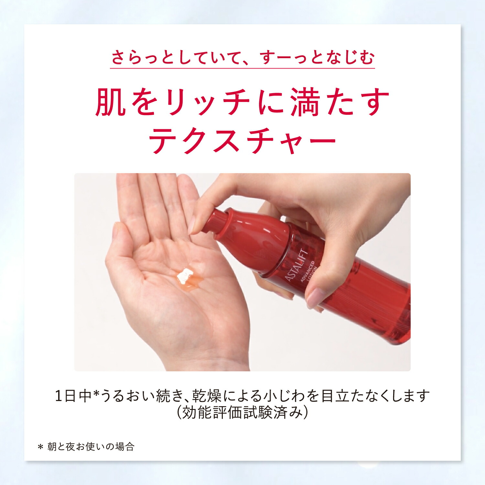
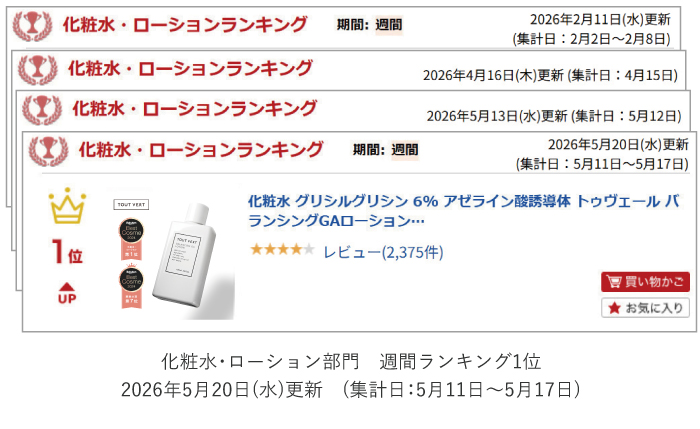
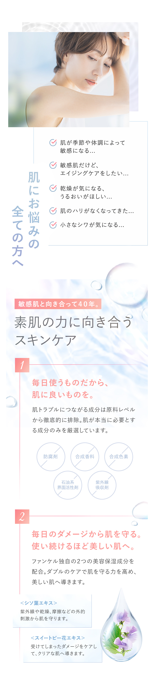
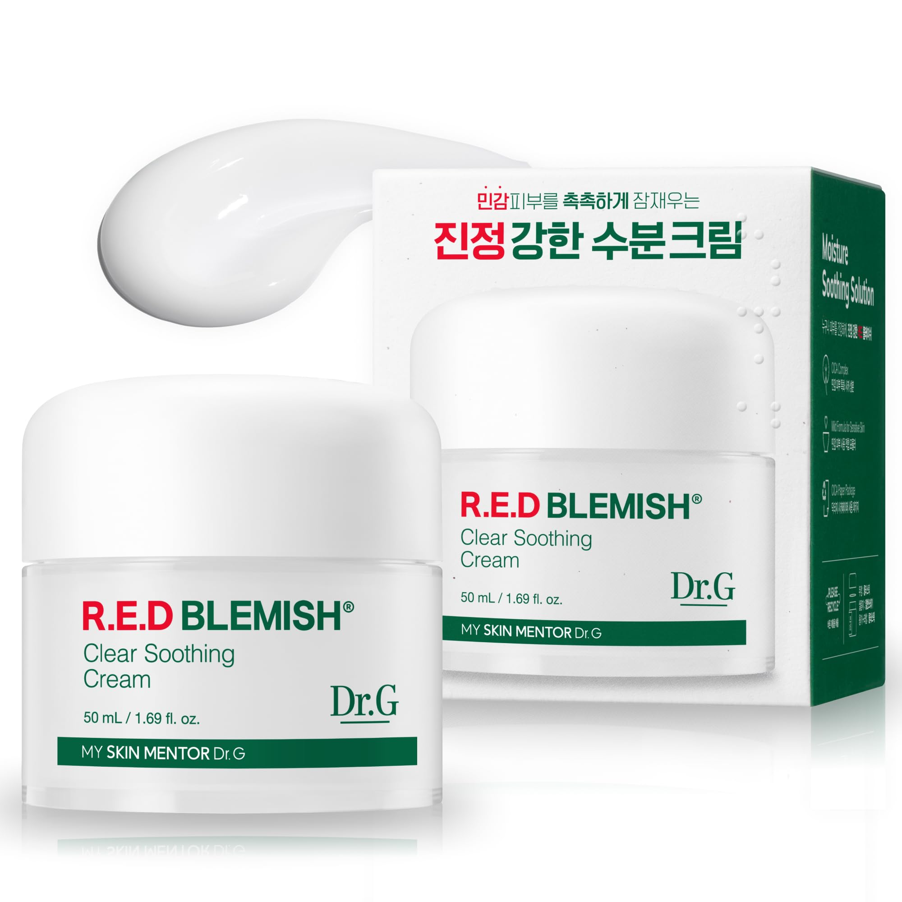

효능은 근거 라벨 + 조건 각주로
「乾燥による小じわを目立たなくします（効能評価試験済み）」
출처: 楽天 · アスタリフト(FUJIFILM) · 2026-07 수집 · 분석 목적 인용
예시 데이터 — 종합 18/100·薬機法 판정·페르소나·일본어 카피는 가상 브랜드 HARUON 샘플입니다. 1장 시장 이미지는 타사 저작물의 분석 목적 소량 인용(출처 병기).
일본 시장 진입 진단 리포트
CICA 진정 앰플 · 스킨케어 / スキンケア · 발행 2026-07-18
일본 상세 관례 충족도
11문장 중 8문장이 薬機法상 표현 불가·조건부이고, 일본 상위 제품이 쓰는 신뢰 장치(근거 라벨·※각주·集計日·무첨가 표기)는 하나도 없습니다. 이대로 게재하면 소구력 이전에 광고 리스크부터 발생합니다.
11
감사한 문장
6
표현 불가
5
조건부
0/6
신뢰 장치 관찰
점선 = 일본 상위 제품 관례 수준(80%)
종합점수는 성과 예측이 아니라 일본 상세 관례 충족도입니다.
일본 상위 제품 실측 — 상세페이지 304건 OCR·썸네일 948장 수집(2026-07). 여기서 본 관례가 곧 다음 탭에서 내 브랜드를 채점하는 기준입니다.
주장하지 말고, 근거로 팔 것
効能評価試験済み·배합률·集計日 있는 실적 — 검증 장치가 소구를 대신합니다.
절제가 곧 신뢰다
※각주로 주장 범위를 스스로 좁힙니다. 과장·즉효 단정은 신뢰를 깎고 薬機法 위반이 됩니다.
플랫폼 문법을 지킬 것
아마존=클린 단독컷, 라쿠텐=신뢰 배지, Qoo10=프로모 문법 — 채널마다 다른 썸네일로 팝니다.

효능은 근거 라벨 + 조건 각주로
「乾燥による小じわを目立たなくします（効能評価試験済み）」
출처: 楽天 · アスタリフト(FUJIFILM) · 2026-07 수집 · 분석 목적 인용

실적은 집계일 있는 제3자 지표로
「ランキング1位（集計日：5月11日〜5月17日）」
출처: 楽天 · TOUT VERT · 2026-07 수집 · 분석 목적 인용

무첨가는 라벨로 세어 보여준다
防腐剤・合成香料・合成色素 등 뺀 것을 5개 배지로 나열
출처: 楽天 · ファンケル(FANCL) · 2026-07 수집 · 분석 목적 인용
층화 표본 120장 라벨링 (948장 수집분)
분포는 층화 표본 120/948장의 추정치입니다.
렉시콘 100어휘 중 상위 (썸네일 타이틀·@cosme 표본)
韓国コスメ(90)가 자체 유행어일 만큼 관심은 실재합니다 — 문제는 신뢰 문법의 부재입니다.

✕ 반면교사 — 한국어 미변환 실물
Amazon JP에서 실제 관찰된 사례입니다. 일본 고객에게 읽히지 않는 카피는 존재하지 않는 카피와 같고, “현지화가 안 된 브랜드”라는 첫인상까지 만듭니다 — 이 리포트가 막으려는 상태가 정확히 이것입니다.
일본 상위 제품이 쓰는 6가지 신뢰 장치 대비, 내 상세 카피에서 관찰된 것은 0개(부분 2개)입니다.
| 신뢰 장치 | 일본 상위 제품 실제 표현 | 내 콘텐츠 | 갭 |
|---|---|---|---|
| 효능 근거 라벨 | 「効能評価試験済み」 | ✕ 없음 | 효능을 근거 없이 형용사로 단정 |
| 조건 각주 ※ | 「※角層まで」「＊朝と夜お使いの場合」 | ✕ 없음 | 스스로 범위를 좁히는 각주 부재 |
| 성분 배합률 | 「グリシルグリシン 6%」 | △ 부분 | “99%”는 무엇의 비율인지 불명확 |
| 제3자 지표+집계일 | 「週間ランキング1位（集計日：5/11〜5/17）」 | ✕ 없음 | “10만 병 완판”은 집계일·출처 없음 |
| 무첨가/프리 라벨 | 「合成香料フリー」「無香料・無着色」 | ✕ 없음 | 敏感肌 소구의 핵심 문법 완전 결여 |
| 성분 검색표기 | 「CICA（ツボクサエキス）」 | △ 부분 | 병기하면 검색 노출 강화 여지 |
참고 — 진정(鎮静): 한국 최강 소구어지만 일본에선 화장품 효능도, 강한 검색어도 아닙니다. 같은 니즈를 肌荒れ·敏感肌·ゆらぎ肌·整える로 검색합니다.
상세 카피 11문장 · 化粧品으로 상정
채운 붉은 칸 = 최고위험 문장 ④
손상된 피부 장벽을 재생시켜 근본부터 치료합니다
「再生」「治療」는 의약품적 효능 표현 — 어느 등급으로도 불가.
대체: うるおいのヴェールで肌を包み、乾燥に負けないなめらかな肌へ。
피부 속 깊은 곳까지 파고드는 시카(CICA) 앰플
침투 표현은 角質層 한정 + ※각주가 붙어야 가능.
대체: 角層のすみずみ※まで、うるおいで満たす。 ※角質層まで
전체 11건 판정과 대체 표현은 처방 탭의 Before/After로 이어집니다. 본 감사는 1차 스크리닝이며 법률 자문이 아닙니다 — 게재 전 약무 전문가 확인을 권고합니다.
카테고리에 해당하는 항목만 채점 — 같은 점수는 항상 같은 종합 점수로 집계됩니다

ゆらぎ肌に疲れた 나오(仮) · 26–34세 회사원 · 가상 인물
1 · 인지
Instagram / TikTok
리뷰어의 「使ってみた」에서 인지
2 · 탐색
@cosme · 口コミ · 랭킹
과장 카피는 여기서 감점
3 · 구매 = 최종 확신 지점
楽天 / Qoo10 상세페이지
成分·無添加·効能評価를 마지막으로 확인하고 결제
벤치마크 갭·페르소나에서 추론한 일반형 경로입니다 — 가짜 리뷰·평점은 만들지 않습니다.
| 현재(KR) 소구 | 일본 고객에게 읽히는 방식 | 재정의된 USP |
|---|---|---|
| 즉각 진정 · 트러블 싹 | 化粧品でそんな効果出るの? — 경계심 자극 · 표현 불가 | ゆらぎがちな肌を、うるおいで整える |
| 99% 고농축 · 병원 처방급 | 何の99%? — 수치 근거 불명확 + 의료 비교 | 정확한 배합률 + 기전으로 말하는 성분 신뢰 |
| 10만 병 완판 · 리뷰 난리 | 集計日は? — 출처 없는 실적은 불신을 키움 | 累計出荷 + 集計時点 명기 |
| (부재) 무첨가·안전 소구 | 가장 먼저 찾는 정보에 답이 없음 = 탐색 이탈 | 敏感肌の毎日に、無添加という安心 |
위반·저점 문장을 문장 단위로 고치고, 가장 저점인 헤드라인 블록은 통째로 다시 짰습니다. 번역이 아니라 정보 구조의 재설계입니다.
재작성 1
푸는 문제 · 효능 단정【불가】 서사 구조 33%BEFORE · KR
트러블 싹, 붉은기 싹 — 바르는 순간 즉각 진정
AFTER · JP
乾燥による肌あれ※が気になる肌を、うるおいでキメ整える。 ※角層
‘없앤다’가 아니라 ‘정돈한다(整える)’ — 효능 56항목 안에서 진정 니즈를 흡수합니다.
재작성 2
푸는 문제 · 再生·治療【불가·최고위험】BEFORE · KR
손상된 피부 장벽을 재생시켜 근본부터 치료합니다
AFTER · JP
うるおいのヴェールで包み、乾燥に負けないなめらかな肌へ導く。
결과 단정을 지우고 ‘이끈다(導く)’는 완화 표현으로 — 일본 상세의 관례적 절제입니다.
하이라이트 — 헤드라인 블록 통재구성
병원 비교·심부 침투【불가】 신뢰 10% · 무첨가 0%BEFORE · KR
병원 안 가도 되는 진정의 답 / 피부 속 깊은 곳까지 파고드는 시카 앰플
AFTER · JP
ゆらぎがちな肌※1に、うるおいという選択を。
角層のすみずみ※2まで満たす、CICA(ツボクサエキス)アンプル。
※1 季節や乾燥によるコンディションの変化 ※2 角質層まで
After는 실측 코퍼스 표현·렉시콘 근거로만 씁니다 — 가짜 수치·가짜 인증은 넣지 않습니다. 전체 5쌍 재작성은 정본 리포트에 포함됩니다.
“재생·치료” 표현을 오늘 내리세요. 의약품적 효능 표현 — 최고위험입니다
침투 표현을 角層 한정 + ※각주로 좁히세요
“10만 병 완판”에 집계 시점·출처를 붙이거나 내리세요
무첨가·프리 처방 라벨을 만드세요 — 敏感肌 구매의 관문입니다
① 진단 리포트
30만 원
지금 받으신 문서 · 1건 고정가
② 마케팅 스튜디오
월 20만 원
첫 달 진단비 30만 원 공제 · 일본향 콘텐츠 제작
③ 운영
구독 내 확장
진단만 받고 끝내도 됩니다
BEFORE · 한국 판촉 원본

특가·밈 카피·형광 테두리 — 한국 판촉 문법.
AFTER · 일본향 재설계 (스튜디오 예시)

白浮きしない、透明感トーンアップUV SPF50+ ・ PA++++
지금 본 재설계를, 당신 브랜드로 직접.
가입하면 마케팅 스튜디오를 결제 전에 무료로 써볼 수 있는 크레딧을 드립니다.
KGLOW · 진단 리포트 r_8f31c0a2 · 화면 속 점수·판정·일본어 카피는 정본 샘플(가상 브랜드 HARUON)의 예시 데이터입니다
KGLOW. 진단 리포트
HARUON — CICA 진정 앰플 · 스킨케어
발행 2026-07-18 · 진단 리포트 고정가 30만 원 · 보고용 요약 7장
결론 — 이 장만 봐도 판단 가능
일본 상세 관례 충족도 18점 — 신뢰 구조가 비어 있어 이대로 게재하면 소구력 이전에 광고 리스크부터 발생합니다. 문장 재설계가 선행 조건입니다.
종합점수는 성과 예측이 아니라 “일본 상세 관례 충족도”입니다
점수 · 최우선 재설계 Top 3
Top 3: ① 무첨가·안전 소구 (0%) → ② 신뢰 구축 (10%) → ③ 카테고리 적합성 (13%)
薬機法 리스크 — 총 11문장 전수 감사
6
【불가】
5
【조건부】
0
【가능】
최고위험 문장 ④【불가】
“손상된 피부 장벽을 재생시켜 근본부터 치료합니다” — 의약품적 효능 표현, 어느 등급으로도 불가
벤치마크 갭 — 빠진 신뢰 장치 (코퍼스 90건 실측 대비)
“미관찰”은 이 표본 스캔 결과의 사실 기술입니다
Before / After — 재설계 1종 (총 5쌍 중)
BEFORE · KR
손상된 피부 장벽을 재생시켜 근본부터 치료합니다
AFTER · JP
うるおいのヴェールで包み、乾燥に負けないなめらかな肌へ導く。
“수분의 베일로 감싸, 건조에 지지 않는 매끄러운 피부로 이끈다” — 결과 단정을 지우고 완화된 표현으로
번역이 아니라 정보 구조의 재설계입니다
다음 단계 · 비용 — 고정가, 견적 왕복 없음
① 진단 리포트
30만 원
지금 받으신 문서 · 1건 고정가
② 마케팅 스튜디오
월 20만 원
첫 달 진단비 공제 · 일본향 콘텐츠 제작
③ 운영
구독 내 확장
진단만 받고 끝내도 됩니다
대행이 아니라 사전 진단 → 실행 지원